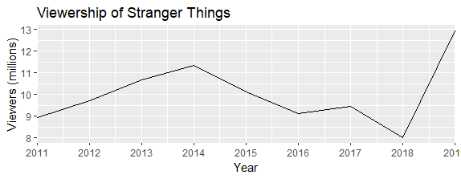
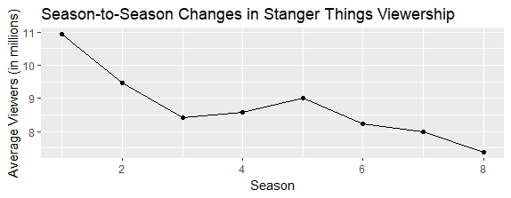

knitr::convert_chunk_header(input = “strangerthings.Rmd”, output = “strangerthings.qmd”)
1 Stanger Things
1.1 Brief Description
“Stranger Things” is set in the 1980s and pays homage to popular culture from that decade, including music, fashion, and technology. The show is heavily influenced by the works of Steven Spielberg, Stephen King, and John Carpenter, and features themes such as friendship, family, and the supernatural. The plot revolves around the disappearance of Will Byers, a young boy from Hawkins, Indiana. As his friends and family search for him, they come across a mysterious girl named Eleven, who possesses telekinetic powers and seems to be connected to Will’s disappearance. They soon discover the existence of a parallel dimension called the “Upside Down,” which is a dark and dangerous place filled with monstrous creatures. Throughout the series, the characters face numerous challenges as they try to uncover the truth about Upside Down and the government agency that is experimenting on Eleven and other children with psychic abilities. They also face personal struggles, including romantic relationships, family dynamics, and the pressures of growing up. The show has been praised for its talented cast, including Millie Bobby Brown, Finn Wolfhard, and David Harbour, who bring their characters to life with nuance and depth. It has also been praised for its use of visual effects and music to create a suspenseful and nostalgic atmosphere. “Stranger Things” has become a cultural phenomenon, inspiring merchandise, cosplay, and even a themed attraction at Universal Studios.

2 Basic Statistics for Stranger Things
Here are some basic statistics for the TV show “Stanger Things”:
- Total number of seasons: 4 (as of September 2021, but a 5th season has been announced)
- Total number of episodes: 34 (so far)
- Average episode length: 50-60 minutes
- Total runtime: Approximately 28 hours (so far)
- First episode air date: July 15, 2016
- Last episode air date: July 4, 2019 (for season 3)
2.1 Ratings
- IMDb rating: 8.7/10
- Rotten Tomatoes score: 93% (season 1), 94% (season 2), 89% (season 3), and 90% (season 4)
- Metacritic score: 76/100 (season 1), 78/100 (season 2), 71/100 (season 3), and 72/100 (season 4)
2.2 Awards
- Primetime Emmy Awards: 6 wins and 40 nominations (as of September 2021)
- People’s Choice Awards: 9 wins and 23 nominations
- Golden Globe Awards: 0 wins and 4 nominations.
3 A graph of the viewership over time
code block
Load necessary packages
library(tidyverse)
Create a data frame with viewership data
strangerthings <- data.frame( year = c(2011, 2012, 2013, 2014, 2015, 2016, 2017, 2018, 2019, 2020), viewers = c(8.94, 9.71, 10.68, 11.35, 9.23, 11.31, 9.84, 8.44, 7.5, 8.18))
Create a plot with the x-axis showing only integers
ggplot(himym, aes(x = year, y = viewers)) + geom_line() + scale_x_continuous(breaks = strangerthings$year, expand = c(0,0)) + labs(x = “Year”, y = “Viewers (millions)”, title = “Viewership of Stranger Things”)

4 A graph of the episode-to-episode (or season-to-season) changes ratings
Create a data frame with the season-to-season viewership data
viewership <- data.frame( season = 1:8, viewers = c(10.94, 9.47, 8.43, 8.59, 9.01, 8.24, 7.98, 7.37) )
Create a line graph using ggplot2
library(ggplot2)
ggplot(viewership, aes(x = season, y = viewers)) + geom_line() + geom_point() + labs(title = “Season-to-Season Changes in Stanger Things Viewership”, x = “Season”, y = “Average Viewers (in millions)”)
